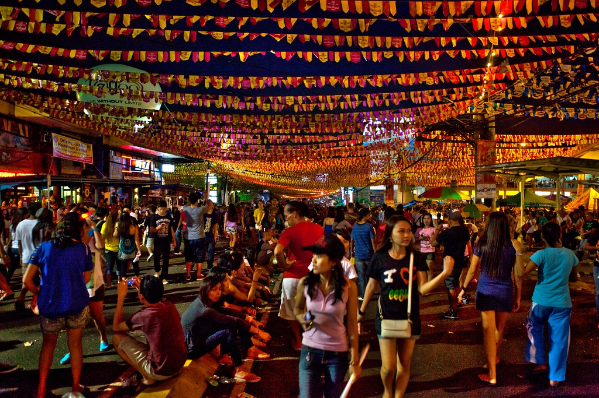
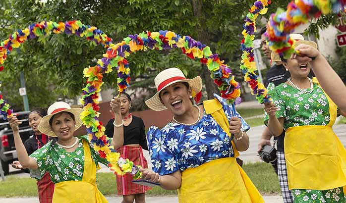

Street at Night During Sinulog | In Cebu, Philippines
Philippines(tradition)
Filipinos sure know how to throw a street party, and they do it in colors and full costumes. Festivals in the Philippines are some of the most joyous, fun, and loud in Asia. Festivals in the Philippines are either religious, historical, or cultural. Religious festivals honor Roman Catholic figures, historical festivals celebrate significant events, while cultural festivals celebrate a bountiful harvest or promote products. One of the religious festivals includes Ati-Atihan Festival celebrated in Kalibo, Aklan, every January in honor of the Santo Niño (Child Jesus).
